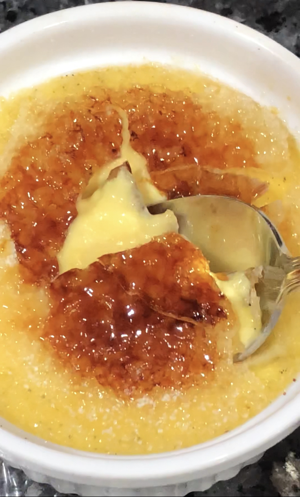
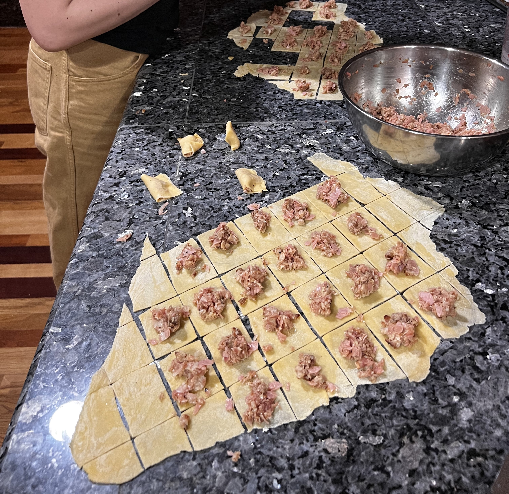

The Wednesday Night Cookbook
List of Recipes:
Winter
Spring
Summer
Fall
Drinks
Winter
Arayes

Arayes
Adapted from Hungry Paprikas.
Ingredients:
- ½ onion
- 5 cloves garlic
- handful of parsley
- 1 lb ground beef
- 1 tsp salt
- 1 tsp pepper
- 1 tsp seven spice
- 2 tbsp pomegranate molasses
- 2 tbsp olive oil
- 4 pitas
- 2 tbsp olive oil
Steps:
- Preheat oven to 400F.
- Process onion, garlic, and parsley in food processor until a paste forms.
- Add onion mixture to a large bowl with beef, salt, pepper, seven spice, pomegranate molasses, and olive oil and mix with hands until just combined.
- Cut pitas in half crosswise. Stuff each pocket with meat mixture until full; press to flatten slightly so that filling comes all the way to the edge.
- Brush the outside of each pita with olive oil. Heat a cast iron skillet on high heat and sear the pitas for about a minute on each side, and on the side of the meat as well.
- Transfer pitas to a baking sheet and bake for about 15 minutes or until cooked through. Serve with yogurt sauce and/or harissa ketchup.
Pitas
Adapted from Natasha’s Baking.
Ingredients:
- 200 g water
- 3 g instant yeast
- 30 g sugar
- 350 g bread flour
- 30 g olive oil
- 6 g salt
Steps:
- Mix together all ingredients until no dry flour remains. Cover and let rest for 30 minutes.
- Knead by hand for 5 minutes until smooth. Cover and let rest for 1 hour.
- Perform a stretch and fold. Cover and let rest for another 30 minutes.
- Sprinkle flour over work surface. Dump dough on top and divide into 6 pieces. Round each piece into a ball, then cover work surface loosely with a kitchen towl. Let rest for 15 minutes.
- Sprinkle each ball with flour and roll into an approximately 6-inch round.
- Heat cast iron skillet until very hot. Place one dough round onto the skillet and cook for about 1 minute or until browned on bottom. Flip and cook for another minute, then remove. Repeat with rest of dough.
Bibimbap
After a somewhat disappointing Arkansas bibimbap experience, we made our own.

Bibimbap
Ingredients:
- 2 tbsp gochujang
- 1 tbsp sesame oil
- 1 tbsp sugar
- 1 tbsp water
- 1 tsp rice vinegar
- 1 clove garlic, minced
- spinach
- sesame oil
- oil for sautéing
- some mushrooms, sliced
- 1 jalapeño, thinly sliced
- 1 carrot, julienned
- bulgogi-ish
- steamed rice
- 2 fried eggs
- sesame seeds
- kimchi
- cucumber salad
Steps:
- Combine gochujang, sesame oil, sugar, water, rice vinegar, and garlic in a small bowl to make the gochujang sauce.
- In a large skillet, wilt the spinach. Remove and season with sesame oil.
- Wipe out skillet and heat a bit of oil. Sauté the mushrooms and jalapeño.
- Wipe out skillet. Add a bit more oil and sauté the carrots briefly until just beginning to soften. Season with sesame oil.
- Wipe out skillet. Spread steamed rice all over bottom of skillet. Top with alternating mounds of spinach, mushroom-jalapeño, carrots, and bulgogi. Place eggs on top. Shower with sesame seeds. Heat skillet if desired to create crispy crust and serve with gochujang sauce, kimchi, and cucumber salad.
Bulgogi-ish
Ingredients:
- 2 tbsp soy sauce
- 2 tbsp sesame oil
- 1 tbsp brown sugar
- 2 cloves garlic, minced
- 1 flat iron steak, thinly sliced
- vegetable oil for searing
Steps:
- Combine soy sauce, sesame oil, brown sugar, and garlic in a large bowl. Add steak and toss to coat. Let marinate for 30 minutes.
- Heat a thin layer of oil in cast iron skillet. Add enough meat to cover bottom of pan in one layer and sear on both sides until charred and cooked through. Repeat with remaining meat.
Piñon

Piñon
Ingredients:
- 4 cloves garlic
- 1 medium onion, roughly chopped
- 1 red bell pepper, roughly chopped
- 1 green bell pepper, roughly chopped
- 1 bunch cilantro
- 6 ripe plantains
- vegetable oil for frying and sautéing
- salt
- 1 c tomato sauce
- 1 lb ground beef
- 1 tbsp adobo seasoning
- ½ c raisins
- ½ c pimiento-stuffed olives, sliced
- ¼ c dry red wine
- 3 eggs
- 2 c shredded mozzarella
Steps:
- Pulse together garlic, onion, bell peppers and cilantro in a food processor until a chunky paste forms.
- Peel plantains and slice each plantain lengthwise into thin slices.
- Heat a cup of oil in a large skillet or wok. Line a plate with paper towels. Fry plantains in batches until golden brown, then transfer to paper towel-lined plate. Sprinkle with salt and repeat until all plantains are fried.
- Heat some oil in a skillet. Add vegetable sofrito and tomato sauce and cook until sofrito begins to soften, about 5 minutes. Add beef and seasoning and cook through. Add raisins, olives, and wine. Reduce heat to low and simmer for 15 minutes, covered.
- Preheat oven to 350F. Lightly coat a baking dish with oil. Whisk together eggs in a small bowl. Arrange a third of the fried plantain slices in a layer on the bottom of the dish. Top with half of the picadillo and a third of the mozzarella. Layer on more plantains, then the rest of the picadillo and half of the remaining mozzarella. Top with remaining plantains. Pour the eggs evenly over the dish.
- Bake for 20-25 minutes, until set. Sprinkle on the remaining mozzarella and bake for 5 more minutes until cheese has melted.
Valentine’s Day Scallops
Broccolini, Boursin, and Belgian endive galette

Ingredients:
- 180 g flour
- 5 g sugar
- 3 g salt
- 1 stick (115 g) unsalted butter
- ¼ c (approx) cold water
- broccolini
- okay olive oil
- salt
- Boursin
- an egg or a couple tbsp of cream
- 1 head Belgian endive
- good olive oil
- zest of a lemon
Steps:
- Combine flour, sugar, and salt in a large bowl.
- Cut the butter into small chunks directly into the bowl, then use your fingers to smash and flatten each chunk. Once each chunk has been flattened, run your fingers through the mixture a few more times, rubbing the butter into smaller pieces.
- Add the water, bit by bit, mixing with a spoon until the mixture has formed large clumps with only a few dry bits.
- Pat the dough into a rectangle (give it a couple folds if you feel like it), wrap with cling film, and refrigerate for at least an hour before using.
- Toss the broccolini with the okay olive oil and salt and roast on a baking sheet at 425F for about 20 minutes until tender. Let cool.
- Preheat oven to 400F. Roll out the dough into a thin sheet. Smear Boursin over the dough, leaving a 1- to 1.5-inch boundary. Scatter the broccolini on top.
- Crimp the edges over and brush with egg or cream. Bake for approximately 35 minutes, or until crust looks cooked through and golden.
- Gently flake apart the head of endive and arrange leaves on top of the tart. Drizzle with the good olive oil and zest a lemon over the top.
Seared scallops with chorizo and corn
Adapted from Bon Appétit.

Ingredients:
- olive oil for sautéing
- 2 oz chorizo
- a bunch of scallions, thinly sliced
- 4 cloves garlic, thinly sliced
- 1 serrano chile, minced
- 3 ears of corn, kernels cut off
- salt
- pepper
- 1 c buttermilk
- 1 lb scallops
- 2 tbsp butter
- 1 lime
Steps:
- Heat a bit of oil in a skillet. Cook chorizo until starting to crisp. Spoon off any excess oil. Add scallions, garlic, and chile and cook until vegetables are softed. Add corn and cook through for about 5 more minutes. Season to taste. Stir in buttermilk.
- Season scallops with salt and pepper. Heat reserved chorizo oil and more olive oil is needed in a cast iron skillet until smoking. Sear scallops on each side.
- Reduce heat to low and add butter to pan. Baste scallops with butter for about 30 seconds, then remove from pan and squeeze over half of the lime.
- Plate scallops on top of corn mixture and squeeze remaining lime over the top to taste.
CRÈME BRÛLÉE!
2023 is the Year of the Custard. Adapted from Serious Eats.

Ingredients:
- 1 c heavy cream
- 1 c whole milk
- ½ vanilla bean, split and scraped
- ¼ tsp salt
- 5 egg yolks
- 67 g sugar
- hot water for bain marie
- sugar for topping
Steps:
- Combine cream, milk, vanilla bean, and salt in a saucepean. Bring to a simmer, then turn off the heat and let steep for 1 hour.
- Preheat oven to 325F. Whisk together yolks and sugar until smooth, then whisk in cream mixture.
- Strain mixture into a spouted measuring cup. Set 4 ramekins in a baking dish. Divide mixture evenly into ramekins.
- Place baking dish in oven. Pour hot water into dish until it comes halfway up the outsides of the ramekins.
- Bake for about 35 minutes until the custard is set on the edges and still gently wobbly in the center. Remove dish from oven and, using tongs, transfer ramekins to a rack to cool for about an hour at room temperature. Refrigerate ramekins uncovered for at least 4 hours.
- Sprinkle a small spoonful of sugar over each custard and blowtorch until caramelized.
Drink pairing: Martha Stoumen’s Post Flirtation white.
Pizza!

Sausage and hot pepper pizza
Ingredients
- Italian sausage, rolled into tiny balls
- olive oil
- Macedonian pickled hot peppers
- pizza sauce (or a can of tomato purée mixed with salt, sugar, garlic powder, dried oregano, and vinegar to taste)
- fresh mozzarella, torn
- parmesan, grated
Corn, pickled jalapeño, and creamed shishito pepper pizza
- Italian sausage, rolled into tiny balls
- olive oil
- Macedonian pickled hot peppers
- pizza sauce (or a can of tomato purée mixed with salt, sugar, garlic powder, dried oregano, and vinegar to taste)
- fresh mozzarella, torn
- parmesan, grated
Ingredients
- fresh corn cobs
- shishito peppers
- pickled jalapeños
“Neapolitan” pizza crust
This crust is similar to the hoagie recipe below, but without the sesame seeds and oil, and obviously not formed into a hoagie shape.
Ingredients
For the poolish:
- 55 g bread flour
- 55 g water
- scant ⅛ tsp instant yeast
For the dough:
- all the poolish
- 275 g bread flour
- 195 g water
- 1 g instant yeast
- 25 g water
- 6 g salt
- sauce and toppings
Steps:
- Combine poolish ingredients in a very large bowl. Cover with plastic wrap and leave for 12 hours at room temperature. After 12 hours, poolish should be very bubbly, and a small spoonful will float in water if ready.
- Once the poolish is ready, add the flour, 195 g water, and yeast. Mix thoroughly with a big spoon, and then by hand, until combined. Cover with a towel and let autolyse for 30 minutes.
- Add remaining water and salt and squeeze into the dough by hand until fully combined. Cover and let rest for 30 more minutes.
- Perform a series of stretch and folds. Cover and let sit for 1 hour.
- Stretch and fold the dough again. Cover and leave for 1 hour.
- Stretch and fold. Cover and leave for another hour.
- Punch down dough if needed, then transfer to fridge. Refrigerate for at least 8 hours.
- Press out dough onto a sheet of parchment and coax it into a thin round.
- Preheat oven to 550F with a baking steel inside. Top the pizza.
- Transfer pizza, still on parchment, onto the baking steel in the oven. After a few minutes, slide the parchment out from underneath the pizza, leaving the pizza on the steel. Bake for about 10-15 minutes (or until it looks done).
Chicago tavern-style thin crust
Adapted from John Carruthers’s recipe via Wordloaf.
Ingredients:
- 185 g bread flour
- 6 g cornmeal
- 3 g sugar
- 3 g salt
- 1 g instant yeast
- 95 g ice-cold water
- 15 g olive oil, plus more for coating dough
- sauce and toppings
Steps:
- Combine dry ingredients in a bowl. Add water and oil and knead until homogeneous.
- Shape the dough into a ball. Lightly coat the dough with oil and place in a tupperware container. Refrigerate for at least a few days.
- The night before baking (no longer than 24 hours prior), let the dough rest at room temperature for 2-3 hours. Then roll out into a thin 14-inch round on a sheet of parchment. Dock with a fork and return to fridge, uncovered, until ready to bake.
- Preheat oven to 550F with a baking steel inside. Top the pizza.
- Transfer pizza, still on parchment, onto the baking steel in the oven. After a few minutes, slide the parchment out from underneath the pizza, leaving the pizza on the steel. Bake for about 8-10 minutes.
Drink pairing: a chilled, lightly effervescent Lambrusco.
Spring
Moules Frites

Moules marinières
Ingredients:
- butter or olive oil for sautéing
- 1 leek, thinly sliced
- 1 fennel stalk, thinly sliced
- 1 shallot, thinly sliced
- 1 fresno chile, thinly sliced
- 4 cloves garlic, thinly sliced
- 2 bay leaves
- salt and pepper
- 1 c white wine
- 1 lb mussels
- handful of parsley, minced
- big squeeze lemon juice
Steps:
- In a Dutch oven, heat the butter or olive oil and add leek, fennel, chile, shallot, garlic, and bay leaves. Season with salt and pepper. Sweat vegetables until very soft.
- Add wine, bring to a boil, adn reduce for a couple minutes. Add mussels and cover pot. Cook, shaking pot intermittently, until all mussels have opened – it won’t take very long.
- Scatter parsley and squeeze lemon on top and serve.
Oven fries
Ingredients:
- 2 russet potatoes, cut into sticks
- water
- salt
- vegetable oil for oven frying
Steps:
- Preheat oven to 450F. Place potatoes in a pot and add water to cover by a couple inches. Add some salt and bring to a boil. Cook for a total of about 10 minutes or until potatoes are almost cooked through but still firm inside.
- Generously coat a baking sheet with oil and place in the oven for a few minutes to heat up. 3. Drain the potatoes and add them to the oil. Toss to coat and bake for about 30 minutes, flipping every once in a while, or until crispy. Salt as needed.
Aïoli
Ingredients:
- 2 garlic cloves, Microplaned
- ¼ tsp salt
- 1 egg yolk
- big squeeze lemon juice
- ¼ c vegetable oil
- ¼ c olive oil
Steps:
- Combine garlic, salt, egg yolk, and lemon juice in a bowl.
- Combine oils in a spouted measuring cup. Pour into bowl in a slow stream, whisking constantly, until emulsified. Add more salt if needed.
Drink pairing: we had a vinho verde with this, but a fresh and bright rosé, like my erstwhile obsession, Claus Preisinger’s Rózsa Libre, would not go amiss.
Tortellini in Brodo

Tortellini in brodo
Ingredients:
For the broth:
- 2 lb chicken bones or wings
- 1 onion, halved
- 1 carrot
- 1 stick celery
- 1 potato, peeled
- water to cover
- salt
For the pasta:
- 1 c flour
- 2 eggs
For the filling:
- oil for cooking pork
- 7 oz pork loin, diced
- 7 oz prosciutto, minced
- 7 oz mortadella, minced
- 4 oz parmesan, grated
- 2 eggs
- nutmeg
- salt
- pepper
Steps:
- Add chicken bones, onion, carrot, celery, potato to a large stock pot. Add water to cover and bring to a boil. Reduce heat to low and let simmer, skimming as needed, for at least an hour. Strain out solids and salt to taste.
- Meanwhile, make pasta. Form flour into a small mound. Make a well in the center and crack in eggs. Lightly beat with a fork, then gradually add flour in from sides to form a dough. Knead until smooth, then wrap in plastic and let rest for 30 minutes.
- Heat oil in a skillet and add pork. Sauté until cooked. Remove from heat and mince.
- Combine pork with prosciutto, mortadella, parmesan, and eggs. Season to taste with nutmeg, salt, and pepper.
- Divide pasta dough in half. Roll each half into a very, very, very thin sheet. Cut into 1-inch squares. Place about half a teaspoon of filling on each square. Dip finger in water and moisten edges of square. Fold square diagonally in half, lightly pinching sides to seal, then fold the opposite corners on the base to meet. Repeat until all tortellini are formed.
- Add a couple cups of broth to a saucepan and bring to a boil. Add tortellini to broth and boil until cooked through. Serve in bowls with broth and more parmesan on top.
Dry Rub Chicken with Risotto Milanese
Dry rub chicken
Ingredients:
- 4 chicken thighs
- olive oil to lightly coat chicken
- brown sugar
- salt
- pepper
- ajika seasoning
- paprika
- cumin
- ground coriander seed
- ground bay leaves
- za’atar
Steps:
- Preheat oven to 400F.
- Toss chicken with oil. Combine suitable amounts of seasonings and spices as desired and coat the chicken with the spice rub, making sure to get some underneath the skin.
- Roast until cooked through.
Risotto milanese
Adapted from Serious Eats.
Ingredients:
- 4 c chicken stock (leftover from making tortellini)
- 3 tbsp olive oil
- 2 c arborio rice
- 1 small onion, minced
- 1 c dry white wine
- 2 pinches saffron
- salt
- pepper
- 2 tbsp butter
- some grated parmesan
Steps:
- Bring stock to a boil in a saucepan, then keep at a simmer while making the risotto.
- Heat oil in a wide skillet until shimmering. Add rice to skillet, stir to coat, and toast, stirring frequently, for about 5 minutes.
- Add onion and cook until fragrant. Add wine and cook for a few more minutes until almost evaporated.
- Add a ladleful of stock to skillet along with saffron and a pinch of salt. Cook, stirring, until stock is almost all absorbed. 5. Continue adding ladlefuls and cooking after each addition until nearly absorbed. Repeat until rice is fully cooked. Season to taste, mount in the butter, and stir in the parmesan.
Summer
Chicken Cutlet Sandwich

Chicken cutlet sandwiches
Ingredients:
- olive oil for sautéing
- 1 10 oz. bag chopped Tuscan kale
- 3 garlic cloves, thinly sliced
- 1 red onion, thinly sliced
- 2 seeded rolls
- 4 chicken cutlets
- fresh mozzarella, torn
- Calabrian chile mayo
- a few slices of prosciutto
- hot peppers, chopped
Steps:
- Heat some olive oil in a large pan and fry the garlic cloves until golden. Remove garlic with a slotted spoon.
- Sauté the kale in the oil until softened.
- Split and toast the rolls.
- Top the cutlets with mozzarella and broil until the cheese is melted.
- Slather the mayo on both sides of the rolls.
- Layer on the prosciutto, cheesy cutlets, red onion, hot peppers and kale.
Seeded hoagie rolls
Based on Nicola Lamb’s focaccia recipe, but hoagie-fied and with less oil in the dough.
Ingredients
For the poolish:
- 110 g bread flour
- 110 g water
- ⅛ tsp instant yeast
For the dough:
- all the poolish
- 550 g bread flour
- 385 g water
- 2 g instant yeast
- 50 g water
- 13 g salt
- 50 mL olive oil
- sesame seeds
Steps:
- Combine poolish ingredients in a very large bowl. Cover with plastic wrap and leave for 12 hours at room temperature. After 12 hours, poolish should be very bubbly, and a small spoonful will float in water if ready.
- Once the poolish is ready, add the flour, 385 g water, and yeast. Mix thoroughly with a big spoon, and then by hand, until combined. Cover with a towel and let autolyse for 30 minutes.
- Add remaining water and salt and squeeze into the dough by hand until fully combined. Cover and let rest for 30 more minutes.
- Add olive oil and perform a series of stretch and folds. Cover and let sit for 1 hour.
- Stretch and fold the dough again. Cover and leave for 1 hour.
- Stretch and fold. Cover and leave for another hour.
- Punch down dough if needed, then transfer to fridge. Refrigerate for at least 8 hours.
- Divide dough into 4 portions. Oil your hands and roll each portion into a ball, then coax into a long oval shape. Place each dough portion onto a big sheet of parchment paper, with some space in between. Fold the parchment between each dough portion so that it cups the dough. Continue coaxing the dough into a long baguette shape over the next 20-30 minutes as it relaxes. Sprinkle each dough portion with sesame seeds to evenly cover the top. Let the dough rest for another 2 hours or so.
- Preheat oven to 500F with a baking steel inside. Slash the tops of the rolls with scissors or a razor blade. Bake rolls on the baking steel for 15-20 minutes or until toasty and the insides register 200F. Remove from oven and let cool completely.
Chicken cutlets
Ingredients:
- 4 boneless skinless chicken thighs
- 1 c flour
- salt
- pepper
- paprika
- garlic powder
- onion powder
- 3 eggs
- 1 c panko
- lots of vegetable oil for frying
Steps:
- Pound the thighs until approximately ¼-inch thick.
- Combine flour and spices in a shallow dish. Crack eggs into another dish and beat to combine. Add panko to a third dish.
- Dredge thighs in flour, then egg, then panko.
- Heat oil in large skillet to 375F. Line a plate with paper towels. Fry cutlets until golden brown and transfer to paper towel-lined plate. Season with more salt.
Calabrian chile mayo
Ingredients:
- chopped Calabrian chiles in oil
- Duke’s mayo
- juice from a jar of pickled hot peppers
- salt, to taste
Steps:
- Blitz all ingredients in a food processor until mostly smooth.
Corn Dog!
Corn dogs
The prompt for this dinner was “deluxe corn dogs”: smoked and rubbed sausage with a batter that actually tastes of cornbread. The batter recipe is adapted from Natasha’s Kitchen.

Ingredients:
For the glizzies:
- 6 Biker Jim’s smoked pork and elk jalapeño cheddar sausages
- spice rub of your choice
- vegetable oil
For the batter and frying:
- ¾ c fine yellow cornmeal
- ¾ c flour
- 2 tbsp sugar
- 1½ tsp baking powder
- ¼ tsp salt
- ¾ c buttermilk
- 1 egg
- 1 tbsp vegetable oil
- 1 tbsp honey
- plenty of vegetable oil for frying
Steps:
- Heat a cast iron pan with a thin sheen of oil until very hot. Meanwhile, coat the dogs in the spice rub.
- Pan-fry the hot dogs, rotating occasionally, until starting to blacken and char all around. Remove to a plate to cool.
- Combine together batter ingredients and whisk until just combined.
- Heat 2-3” of oil in a Dutch oven to 350F.
- Insert a skewer (or takeout chopstick) into each hot dog. Pour batter into a tall glass and insert a hot dog into the batter to coat.
- Line a plate with paper towels. Slip the battered dog into the oil and fry for about 2-3 minutes or until golden brown, then remove onto paper towel-lined plate. Repeat with remaining dogs.
Final touch: make a delicious sauce with ketchup, BBQ sauce, hot sauce, mayonnaise, and whatever else is in the fridge. Pour into a squeeze bottle and squirt a nice wiggle on each corn dog.
Korean potato salad
Adapted from Bon Appétit.
Ingredients:
- 1 small red onion, finely chopped
- 2 Persian cucumbers, small-diced
- 1 carrot, peeled and small-diced
- salt
- 1 lb russet potatoes, peeled and cut into large chunks
- 2 eggs
- 1 ear of corn, kernels cut off
- ½ c mayonnaise
- 2 tbsp rice vinegar
- 1 tbsp sugar
- 1 tsp mustard
Steps:
- Add onion, cucumber, carrot, and about 1 tsp salt to a bowl. Massage the vegetables so they start to release some liquid. Let sit while potatoes cook.
- Add potatoes to a saucepan and cover with 2 inches of water. Season with salt and bring to a boil. Add 2 eggs to the pot, along with the corn. Cook for 10 minutes, then remove eggs. Check if potatoes are cooked; if not, cook for a few minutes until potatoes are done. Drain potatoes and corn.
- Peel eggs and combine with potatoes and corn. Mash to break up potatoes and eggs.
- Squeeze the liquid out of the remaining vegetables and add to the potato mxiture along with the mayonnaise, vinegar, sugar, and mustard. Mix and season with more salt as needed.
Tinned Fish Extravaganza

Tinned fish and accoutrements
Ingredients:
- some lovely tins of fish, like José Gourmet spiced small sardines or spiced small mackerel
- good bread, like a ciabatta
- big fat olives
- good salted butter
- lemon cheeks
- ripe tomatoes
- potato and egg salad
- black-eyed pea and soppressata salad
- chimichurri
- yogurt
- hummus
- pickles
- sliced aged cheeses
- soft herbs
- eggplant chutney
Steps:
- Arrange on a board.
- Make fun toasts! Toast the bread and rub with garlic. Scrape a tomato over to make pan con tomate. Griddle tomato slices and smash onto the bread, then top with chimichurri.Slather with yogurt and dot with eggplant chutney and sprinkle with herbs. etc etc
Potato and egg salad
Ingredients:
- 2 Yukon gold potatoes
- salt
- 2 eggs
- 1 shallot, minced
- a small handful of flat-leaf parsley, minced
- pepper
- lemon
- olive oil
Steps:
- Peel and cube the potatoes. Place in a pot of lightly salted water and bring to a boil. Cook for about 15 minutes until soft.
- Meanwhile, boil the eggs until just set. Shock in ice water and peel, then roughly chop.
- Mix together potatoes and eggs, giving it a light mash. Add shallot and parsley, and season with salt and pepper. Squeeze over some lemon juice and toss with a good amount of olive oil.
Black-eyed pea and soppressata salad
Ingredients
- 1 can of black-eyed peas, drained
- several slices of soppressata, finely chopped
- 1 shallot, minced
- a small handful of flat-leaf parsley, minced
- salt
- pepper
- lemon
- olive oil
Steps:
- Combine all ingredients and season to taste.
Chinese Restaurant Dinner
This came about because one day I entered the hallway of my building and it smelled so intensely like a Chinese restaurant that I was immediately overtaken by an insatiable craving for Chinese seafood banquet hall specialties. Serve with a steaming pot of jasmine rice!!

Salt & pepper shrimp
Adapted from the Woks of Life.
Ingredients:
- 1 tbsp black peppercorns
- 1 tbsp white peppercorns
- 1 tbsp salt
- 1 lb large shrimp, peeled
- 3 tbsp cornstarch
- vegetable oil for shallow frying
- 6 cloves garlic, minced
- 1 jalapeño or fresno pepper, thinly sliced
Steps:
- Toast the peppercorns in a small dry pan until fragrant. Let cool slightly, then add to a spice grinder, along with the salt. Grind to a powder and set aside.
- Pat the shrimp dry and dredge them with the cornstarch.
- Heat about half an inch of oil in a wok to 375F. Line a plate with paper towels. Fry the shrimp in batches until golden and crispy, transferring each batch to the paper towel-lined plate.
- Add the garlic to the oil and fry for a few seconds until golden, before removing with a slotted spoon and transferring to the plate. Add the sliced pepper and fry for a few seconds to blister, then transfer to the plate.
- Toss the shrimp, garlic, and sliced pepper with the salt & pepper mixture to taste.
Bok choy and mushroom stir-fry
Adapted from the Omnivore’s Cookbook.
Ingredients:
For the sauce:
- ¼ c water
- 1 tbsp cornstarch
- 2 tbsp soy sauce
- 1 tbsp oyster sauce
- 1 tsp sugar
- black pepper
- ½ tsp sesame oil
For the stir-fry:
- ¼ c water
- 2 heads baby bok choy, chopped into bite-size pieces
- salt
- A handful of brown mushrooms, sliced
- 1 serrano pepper, thinly sliced
- 2 cloves garlic, minced
- 1 tbsp grated ginger
- 2 green onions, sliced
- vegetable oil for stir-frying
Steps:
- Combine the water and cornstarch in a small bowl until smooth. Mix in remaining sauce ingredients and set aside.
- Add stir-fry water to a wok and bring to a boil on medium-high heat. Add bok choy and a pinch of salt and cook for a minute until softened. Transfer bok choy to a plate.
- Wipe out pan and heat some oil. Sear mushrooms on high heat until browned.
- Push mushrooms to edges of pan. Add a bit more oil, then stir fry serrano pepper, garlic, ginger, and onions until aromatic.
- Return bok choy to wok and combine everything together. Add sauce and stir; cook until sauce boils and thickens.
Smashed cucumber salad
Sorry, I never measure this :/
Ingredients:
- 1 cucumber or (preferably) a few Persian cucumbers
- like, a tsp of salt
- a couple tsp of sugar
- a good lashing of soy sauce
- a good lashing of Chinkiang vinegar
- a sprinkling of sesame oil
- a couple tsp of Lao Gan Ma chili crisp
Steps:
- Cut cucumber crosswise into bite-size chunks, then smash with the side of a knife. (If using a big cucumber, cut in half lengthwise first.)
- Put cucumber in a mixing bowl and toss with salt and sugar. Let sit for 10 minutes to draw out moisture.
- Pour off exuded liquid. Add soy sauce, vinegar, sesame oil, and chili crisp, and toss to combine. Ideally, marinate for a while before serving.
Fall
Chicken Adobo
The impetus for this menu was Dan Souza’s warmly written Grub Street Diet. His description of one particular dinner was so evocative, I had to make the exact same thing.

Chicken adobo
Adapted from Angela Dimayuga.
Ingredients:
- 2 tbsp vegetable oil
- 8 cloves garlic, chopped
- 1 tsp whole black peppercorns
- ½ tsp ground black pepper
- 2 lb chicken thighs
- ½ c coconut milk
- ¼ c cane vinegar
- ¼ c soy sauce
- ½ c water
- 4 fresh bay leaves
- steamed rice
Steps:
- In a Dutch oven, heat the oil until shimmering. Add garlic, peppercorns, and ground pepper, and cook until garlic is fragrant and softened, about 5 minutes.
- Add chicken thighs, skin-side down, and cook until skin begins to brown and render.
- Add coconut milk, vinegar, soy sauce, water, and bay leaves. Bring to a boil on high heat, then reduce heat to low and simmer until chicken is tender, about 45 minutes.
- Increase temperature to high and cook until sauce has thickened to a gravy, about 10 minutes. Serve with rice.
Winter squash with coconut milk and chili
Ingredients:
- 1 medium or 2 small winter squash (e.g. delicata, honeynut, red kuri), cut into thick slices or wedges
- olive oil for roasting
- salt
- pepper
- about ¼ c coconut milk (left over from the adobo)
- 1 tbsp chili crisp
Steps:
- Toss the squash with the olive oil, salt, and pepper and roast at 400F for about 20 minutes or until browned and cooked through.
- Toss with the coconut milk and chili crisp and serve.
Sautéed greens with garlic chips
- a good amount of olive oil for sautéing
- 3 cloves garlic, thinly sliced
- 1 bunch Swiss chard, chopped, stems and leaves separated
- salt
- pepper
Steps:
- Add the oil and garlic cloves to a skillet on low heat. Cook until garlic is crisp and golden. Remove garlic and set aside, leaving oil in pan.
- Add chard stems and sauté for a few minutes to begin softening. Add leaves and continue cooking until wilted and stems are softened. Season to taste.
Butternut Squash Ravioli

Butternut squash ravioli with sage brown butter
Ingredients:
For the pasta:
- 1 c flour
- 2 eggs
For the filling:
- 1 butternut squash, peeled, seeded, and cut into large cubes
- olive oil
- salt
- pepper
- 1 c freshly grated parmesan
- ½ c ricotta
For the brown butter:
- 1 stick butter
- 2 cloves garlic, minced
- 1 tbsp chopped sage
Steps:
- Make the pasta dough. Form flour into a mound on work surface and depress the center to make a well. Crack eggs into well and beat with fork until lightly blended. Gradually incorporate surrounding flour until a dough forms, then knead until smooth. Wrap in plastic and let rest for 30 minutes.
- Meanwhile, toss squash with olive oil, salt, and pepper, and roast at 400F until tender.
- Mash squash and combine with parmesan and ricotta. Season to taste.
- Divide pasta dough in half. Roll out one half into a thin sheet (thinner than you think). Cut sheet in half.
- Place about a tablespoon of filling, in a grid 1 inch apart, on top of one of the sheets. Dip finger in water and moisten the dough around the filling. Place the other sheet on top and press around filling to seal. Cut into squares and crimp with a fork. Repeat with remaining dough.
- In a small saucepan, brown the butter. Once butter is browned, turn off heat and add garlic and sage. Transfer to skillet.
- Boil pasta in salted water for a few minutes. Once cooked through, transfer to skillet with brown butter and toss to combine.
Antipasto salad
Ingredients:
- cherry tomatoes, halved
- salami, diced
- mozzarella pearls
- mixed olives
- olive oil
- salt
- pepper
Steps:
- Combine.
Crying Tiger Steak

Crying tiger steak
Ingredients:
For the steak:
- 2 tbsp soy sauce
- 1 tbsp oyster sauce
- 1 tbsp brown sugar
- 1 tbsp vegetable oil
- 1 tri-tip steak
- vegetable oil for cooking steaks
For the sauce:
- ¼ c uncooked rice
- ½ c lime juice
- ½ c fish sauce
- 1 tsp sugar
- 2 tbsp chopped cilantro
- 2 tbsp chopped green onion
- 1 tbsp red chile powder
Steps:
- Marinate the steak. Combine soy sauce, oyster sauce, brown sugar, and oil in a bowl. Add the steak and turn to coat. Set aside.
- Make the toasted rice powder. Place rice in a dry skillet and toast over medium heat, tossing occasionally, until rice is browned and smells toasty. Grind with a spice grinder into a powder.
- Make the sauce. Mix together 2 tbsp rice powder, lime juice, fish sauce, sugar, cilantro, green onion, and chile powder.
- Heat a thin layer of oil in a cast iron skillet until shimmering. Sear the steak on all sides and cook until medium rare. Rest steak for a few minutes, then slice thinly. Serve with dipping sauce and rice.
Mango som tam
Ingredients:
- 2 tbsp peanuts
- 1 green mango
- 2 cloves garlic
- 1 bird chili or some chili flakes
- 2 tbsp lime juice
- 1 tsp fish sauce
- 1 tsp sugar
- a small handful of cherry tomatoes
Steps:
- Toast the peanuts in a dry pan until fragrant and toasty.
- Peel mango. Julienne by hacking with knife to make many vertical cuts, then slicing off thin layer to produce long strands.
- Pound the garlic and chili in a mortar until finely crushed. Mix in lime juice, fish sauce, and sugar.
- Add mango slivers and cherry tomatoes to mortar and pound until tomatoes are smashed, and dressing is incorporated. Serve, topped with peanuts.
Harissa Shrimp

Harissa shrimp
This dish is adapted from the harissa prawns as served at Bavel and creates the most delicious marinade known to man.
Ingredients:
- 4 dried morita or chipotle chiles
- 3 dried california chiles, seeded
- 1 red bell pepper, stemmed, seeded, and roughly chopped
- 4 Fresno chiles, stemmed
- 1 orange, zested
- 1 tbsp orange juice
- 8 cloves garlic, grated
- 1 tsp tomato paste
- 2 tbsp fish sauce
- 4 anchovies
- 1 tbsp honey
- ½ c brown sugar
- ½ tsp paprika
- 2 tsp ground cumin
- 1 tsp ground coriander
- 1 tbsp salt
- ¼ c vegetable oil, plus more for cooking shrimp
- 2 tbsp olive oil
- 2 lb large shrimp, shelled
Steps:
- Place dried chiles in a small bowl. Cover chiles with boiling water; let hydrate for 10 minutes.
- Combine rehydrated chiles with bell pepper, Fresno chiles, orange zest, orange juice, tomato paste, fish sauce, anchovies, honey, sugar, spices, salt, and oil in a blender or food processor. Puree until smooth.
- Place prawns in a large bowl and coat with marinade. Let marinate overnight in refrigerator if possible, or cook right away.
- Heat a cast iron skillet until ripping hot and add a thin layer of vegetable oil. Sear shrimp for a few minutes on each side until fully cooked.
Blistered cherry tomato toast
Ingredients:
- ½ c Greek yogurt
- zest of ½ lemon
- 1 tsp lemon juice
- salt
- olive oil
- 2 slices sourdough bread
- 4 cloves garlic, minced
- 1 lb cherry tomatoes
- oil-packed anchovy fillets
- chives, minced
- balsamic glaze
Steps:
- Combine yogurt, lemon zest, lemon juice, and salt to taste.
- Drizzle olive oil over bread and toast until golden.
- Heat some olive oil in a cast iron skillet. Add garlic and cook until fragrant. Add tomatoes and cook for a few minutes until blistered. Lightly smash with a wooden spoon and cook for a few more minutes. Season to taste.
- Spread yogurt mixture on toast. Spoon tomatoes over. Lay a few anchovies across the top, sprinkle with chives, and drizzle with balsamic glaze.
Drinks
Clarified Pornstar Martini
As served to guests at the Gathering of the Ethereal.
Ingredients:
- 1 c vodka
- 1 c Chinola passionfruit liqueur
- ½ c Licor 43
- ½ c vanilla syrup
- ½ c lime juice
- ½ c water
- 1 c milk
Steps:
- Combine all ingredients except milk in a large measuring cup or pitcher. Place milk in a large bowl or pitcher.
- Pour cocktail mixture into milk and let sit for 30 minutes for cuds to form.
- Line a strainer with a coffee filter and set over large container. Slowly pour milk-cocktail mixture into filter to strain out curds.
- Repeat straining with a fresh coffee filter if mixture is not completely clear. Transfer clarified cocktail into a bottle and refrigerate until serving.
For the vanilla syrup:
- 100 g sugar
- 1 c water
- ½ vanilla bean
- Combine sugar and water in saucepan. Split and scrape vanilla bean; add pod and pulp to saucepan.
- Bring mixture to a boil, then turn off heat and let cool.
Star Cycle
Possibly the greatest drink I have ever tasted. Recipe adapted from Lance Wong, in turn reverse-engineered from a drink at the Sunken Harbor Club, NYC. Can also be scaled up and batched as a large-format cocktail using a 1.75L handle of New Amsterdam gin tactically extracted from a Houston wedding open bar.
Ingredients:
- 2 oz milk-washed jasmine gin
- ¼ oz Campari
- ¾ oz acid-adjusted grapefruit juice
- 1 oz 1.75:1 sugar:water rich simple syrup
- a pinch of salt
Steps:
- Combine ingredients in a shaker with ice.
- Shake and strain into a coupe glass.
For the milk-washed jasmine gin:
- ¾ c gin
- 2 bags jasmine tea
- ¼ c whole milk
- 3 g of 15% citric acid solution (5 g citric acid to 28 g water)
- Cold-steep tea in gin for about 3 hours.
- Add the gin to the milk.
- Add citric acid solution to the mixture and stir. Let sit for 20 minutes while curds form.
- Strain the mixture through a coffee filter.
For the acid-adjusted grapefruit juice:
- 100 g grapefruit juice
- 4 g citric acid
- Combine juice and citric acid to create a grapefruit juice with the sourness of lemon juice.
Rhubarb Aperitivo

Ingredients:
- 750 mL Everclear
- 8 stalks of home-grown rhubarb, chopped
- peel of 1 organic grapefruit
- handful of home-grown lemon verbena
- handful of home-grown anise hyssop
- handful of home-grown shiso
- a few home-grown fennel fronds
- handful of home-grown chamomile blossoms
- a couple home-grown lavender stalks
- a few dried rosebuds from a wedding favor
- 1 cinnamon stick
- a handful of coriander seeds, crushed
- half a vanilla bean, split
- some random dried aromatics, including rose hips, dried lemon peel, pink peppercorn, and hibiscus
- 750 g (approx) boiling water
- 375 g (approx) water
Steps:
- Combine Everclear with all aromatics in a jar and let steep for 2 weeks, every other day or so.
- Strain out the aromatics, reserving both the aromatics and the infused alcohol.
- Pour boiling water over the aromatics and let steep for about 2 hours.
- Strain out the aromatics and discard. Weigh the alcohol and combine with an equal weight of infused water and half that weight of sugar.
- Bottle and enjoy!